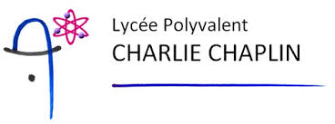
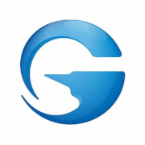

En recherche d'Alternance Responsable en Projet Informatique
DRIDI Jessim 22 ans 6A rue Gambetta Meyzieu 69330 Usakijess@gmail.com Linkdin Permis en cours d'obtention

Passionné par la programmation, je souhaite développer et enrichir mes compétences en participant à des projets professionnels et découvrir de nouvelles expériences
FORMATIONS
Bachelor Responsable de projet Informatique
Licence Maths-Informatique
Université Claude Bernard, Lyon 1 
Baccalauréat Scientifique Science de l'ingénieur
Lycée Charlie Chaplin, Décines 
EXPERIENCE PROFESSIONNEL
Support Client à Distance
Gameforge, Karlsruhe 
Agent de Production
COMPETENCES
Programmation
Bureautique
Langue
CENTRE D'INTERET
Sport : Basket / Handball Littérature : Roman / BD / Manga Culture Numérique : Jeux vidéo / Technologie